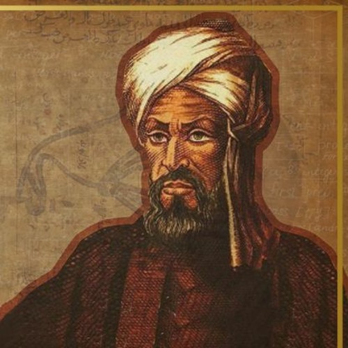

Zenão de Eleia e os Paradoxos
Por volta do século V a.c, Zenão de Eleia elucidou diversos paradoxos,
consoante a visão racionalista radical pré-socrática (visão que
defendia a subjetividade extrema de conceitos "comuns" na sociedade.
Para esses filosófos o movimento, o tempo e o espaço não existiam),
dentre eles o de Aquiles e a tartaruga, da flecha e da dicotomia.
Daremos destaque ao primeiro. Nesse paradoxo ele dissertava sobre uma
corrida em que uma tartaruga saía alguns centímetros à frente do
grande corredor Aquiles, e a partir disso ele elucidava que seria
impossível Aquiles chegar na tartaruga, pois quando Aquiles se movesse
um pouco a tartaruga ainda iria se mover um pouco, de modo que a
distância entre eles fosse de centímetros, milímetros, nanômetros,
etc, mas ele nunca chegaria.
Após Zenão, veio Aristotéles que definiu infinito atual e infinito
potencial. O infinito potencial é aquele que o número de termos cresce
indefinidamente sem atingir a um ponto, pode-se relacionar a ideia de
limite. Já o infinito atual e aquele em que há uma totalidade infinita
acabada (convergente), podendo-nos referir a séries.
 Zenão de Eleia (490–430 a.C.)
Zenão de Eleia (490–430 a.C.)
Posteriormente, no século III a.C., Arquimedes de Siracusa promoveu um avanço significativo na compreensão do infinito ao desenvolver o chamado método da exaustão. Esse método consistia em aproximar áreas e volumes por meio da inscrição e circunscrição de figuras geométricas com um número cada vez maior de lados. Embora não utilizasse formalmente o conceito de séries infinitas, seu raciocínio fundamentava-se na ideia de que uma sequência de aproximações poderia conduzir a um resultado exato, antecipando princípios que, séculos mais tarde, seriam formalizados pela teoria dos limites e das séries convergentes.
Referências bibliográficas
STROGATZ, Steven. O poder do infinito: como o cálculo revela os
segredos do universo. Tradução de Paulo Afonso. 1. ed. Rio de Janeiro:
Sextante, 2022.
SILVA, Jairo José da. Filosofias da matemática. 2. ed. São Paulo:
Editora UNESP, 2011
LAUNAY, Mickaël. A fascinante história da matemática. Rio de Janeiro:
Zahar, 2019.
Idade Média
Em uma visão eurocentrista a Idade Média foi, durante muito tempo, caracterizada como a "Idade das Trevas", marcada por um suposto estagnamento científico. Contudo, essa interpretação tornou-se meramente ultrapassada nos tempos atuais. Nesse período, importantes centros de produção do conhecimento floresceram no mundo islâmico e na Ásia, reunindo, preservando e expandindo grande parte do legado matemático da Antiguidade. Entre seus principais representantes destaca-se Al-Khwarizmi, que os trabalhos sistematizaram o uso dos algarismos indo-arábicos e estabeleceram fundamentos da Álgebra, além de Sridhara, matemático indiano que realizou importantes contribuições para a resolução de equações e para a aritmética.

Al-KhwarizmiA partir da Baixa Idade Média, grande parte desse conhecimento foi introduzida na Europa por meio de traduções do árabe para o latim realizadas por estudiosos como Adelardo de Bath e Gerardo de Cremona. Esse intenso fluxo intelectual possibilitou que matemáticos europeus desenvolvessem novas teorias e métodos, culminando, já durante o Renascimento, nos trabalhos de Fibonacci, Niccolò Fontana Tartaglia, Girolamo Cardano e Lodovico Ferrari. Esses avanços contribuíram significativamente para a consolidação da matemática europeia e prepararam o terreno para o surgimento da matemática moderna.
Referências bibliográficas
STROGATZ, Steven. O poder do infinito: como o cálculo revela os
segredos do universo. Tradução de Paulo Afonso. 1. ed. Rio de Janeiro:
Sextante, 2022.
LAUNAY, Mickaël. A fascinante história da matemática. Rio de Janeiro:
Zahar, 2019.
Idade Moderna (XV-XVII)
Já na Idade Moderna, vieram Galileu Galilei e Johannes Kepler,
fascinados pelo universo e pelo movimento planetário. Galileu
influenciou diretamente Bonaventura Cavalieri, que se declarou
discípulo do próprio, havendo diversas correspondências entre os dois.
Cavalieri foi uma das peças fundamentais para o desenvolvimento das
séries e do cálculo integral, visto que elucidou um método em seu
livro
A Certain Method for the Development of a New Geometry of
Continuous Indivisibles, que consistia no seguinte raciocínio:
1 - Uma linha é formada por infinitos pontos.
2 - Uma superfície é formada por infinitas linhas.
3 - Um sólido pode ser pensado por infinitas superfícies.
Desse modo, mesmo que não fosse conduzida de maneira formal, a teoria
da época já esboçava princípios de séries, limites e cálculo. Nessa
mesma época, René Descartes e Pierre de Fermat debatiam entre si, sob
o intermédio de um matemático denominado Marin Mersenne, desde que
Fermat havia alegado ter descoberto a geometria analítica uma década
antes e, além disso, questionava as descobertas da óptica de
Descartes. Ambos, nessa época, trabalhavam para descobrir qual o ponto
máximo de uma função, sendo que Fermat obteve êxito a partir do
desenvolvimento de uma "derivada" igual a zero.
 Newton (1642-1727)
Newton (1642-1727)
Para consolidar o cálculo diferencial e integral na história, chegaram Gottfried Wilhelm Leibniz e Sir Isaac Newton. Newton "criou" o cálculo diferencial e integral ao demonstrar a veracidade das Leis de Kepler. Inclusive, há um episódio envolvendo Edmond Halley: certo dia, Halley foi dissertar com Newton a respeito da demonstração das Leis de Kepler, e Newton afirmou que já havia realizado essa demonstração, embora não estivesse com as provas dos cálculos. Para resolver esse problema, escreveu a obra Philosophiæ Naturalis Principia Mathematica (Princípios Matemáticos da Filosofia Natural). Já Leibniz foi motivado por seus estudos e pelas personalidades vistas anteriormente, elucidando os símbolos de ∫ para as integrais e d para as derivadas.
Referências bibliográficas
STROGATZ, Steven. O poder do infinito: como o cálculo revela os
segredos do universo. Tradução de Paulo Afonso. 1. ed. Rio de Janeiro:
Sextante, 2022.
LAUNAY, Mickaël. A fascinante história da matemática. Rio de Janeiro:
Zahar, 2019.
FRASER, Craig G. et al. The calculus. In: Encyclopedia Britannica. 3
ago. 2026. Disponível em:
https://www.britannica.com/science/mathematics/The-calculus#ref66006.
Acesso em: 6 ago. 2026.
Idade Moderna (XVIII-XIX)
Após a consolidação do cálculo, diversos cientistas o desbravaram e,
nas aplicações das ciências naturais, vislumbrou-se, naturalmente, o
aparecimento das séries infinitas. Relacionado a isso, veio Jacob
Bernoulli, que utilizou as séries infinitas e exponenciais em
problemas da hidrodinâmica e, mesmo com caráter matemático, agrupou
essas ideias no livro Ars Conjectandi. Em seguida, veio Brook
Taylor, o qual elucidou uma série que dissertava sobre a solução de
uma função de valor desconhecido a partir da aproximação de um de seus
pontos na forma de um polinômio.
Para conduzir a revolução dessa área, Euler foi essencial. Ele
conduziu a demonstração da igualdade de diversas séries; contudo, em
suas resoluções, deparou-se com séries divergentes, que, até então,
não eram formalizadas nem amplamente conhecidas, mas, mesmo assim,
conseguiu resolvê-las, gerando algumas confusões. Pode-se citar também
Carl Friedrich Gauss, que lidou rigorosamente com as séries,
principalmente porque seus estudos envolviam séries hipergeométricas,
além de ter sido o primeiro a definir critérios de convergência para
uma série.
 Carl Friedrich Gauss (1777-1855)
Carl Friedrich Gauss (1777-1855)
Ainda na Idade Moderna, destacou-se Joseph Fourier, que revolucionou o estudo das séries ao demonstrar que funções periódicas poderiam ser representadas por somas infinitas de funções trigonométricas, atualmente conhecidas como séries de Fourier. Inicialmente, suas ideias encontraram resistência por parte da comunidade matemática, uma vez que ainda não existia uma fundamentação rigorosa para justificar tais representações. Apesar disso, seus trabalhos mostraram-se extremamente eficazes na resolução da equação do calor e, posteriormente, tornaram-se indispensáveis em diversas áreas da matemática, da física e da engenharia, marcando uma das aplicações mais importantes das séries infinitas
Referências bibliográficas
STROGATZ, Steven. O poder do infinito: como o cálculo revela os
segredos do universo. Tradução de Paulo Afonso. 1. ed. Rio de Janeiro:
Sextante, 2022.
LAUNAY, Mickaël. A fascinante história da matemática. Rio de Janeiro:
Zahar, 2019.
FRASER, Craig G. et al. The calculus. In: Encyclopedia Britannica. 3
ago. 2026. Disponível em:
https://www.britannica.com/science/mathematics/The-calculus#ref66006.
Acesso em: 6 ago. 2026.
STRUIK, Dirk Jan. Joseph Fourier. In: Encyclopedia Britannica. 3 ago.
2026. Disponível em:
https://www.britannica.com/biography/Joseph-Baron-Fourier. Acesso em:
6 ago. 2026.
Idade Contemporânea
Entretanto, foi Augustin-Louis Cauchy quem conferiu às séries um
tratamento verdadeiramente rigoroso. Até então, muitos resultados eram
obtidos por argumentos intuitivos, que frequentemente levavam a
conclusões corretas, mas sem demonstrações formais. Cauchy introduziu
definições precisas para limites, sucessões e convergência,
estabelecendo critérios que permitiram verificar, de maneira rigorosa,
quando uma série poderia ou não ser considerada convergente. Seus
trabalhos marcaram o início da Análise Matemática moderna.
Posteriormente, Bernhard Riemann aprofundou ainda mais esses estudos
ao investigar séries infinitas e suas propriedades. Um de seus
principais resultados foi o Teorema da Rearranjação de Riemann, que
demonstra que uma série condicionalmente convergente pode assumir
diferentes valores quando seus termos são reorganizados. Esse
resultado evidenciou que as séries infinitas possuíam propriedades
muito mais sutis do que se imaginava, consolidando a necessidade de um
tratamento rigoroso para esse ramo da matemática.
 Georg Cantor (1845-1918)
Georg Cantor (1845-1918)
A partir desses avanços, a teoria das séries tornou-se uma das principais ferramentas da matemática moderna, encontrando aplicações em diversas áreas do conhecimento, como Física, Engenharia, Economia, Ciência da Computação e Processamento de Sinais. Atualmente, séries infinitas são utilizadas para representar funções, resolver equações diferenciais, aproximar soluções numéricas e modelar fenômenos naturais, demonstrando que um conceito originado de discussões filosóficas sobre o infinito tornou-se um dos pilares da matemática contemporânea.
Referências bibliográficas
STROGATZ, Steven. O poder do infinito: como o cálculo revela os
segredos do universo. Tradução de Paulo Afonso. 1. ed. Rio de Janeiro:
Sextante, 2022.
LAUNAY, Mickaël. A fascinante história da matemática. Rio de Janeiro:
Zahar, 2019.
FRASER, Craig G. et al. The calculus. In: Encyclopedia Britannica. 3
ago. 2026. Disponível em:
https://www.britannica.com/science/mathematics/The-calculus#ref66006.
Acesso em: 6 ago. 2026.
GRAY, Jeremy John. Bernhard Riemann. In: Encyclopedia Britannica. 16
jul. 2026. Disponível em:
https://www.britannica.com/biography/Bernhard-Riemann. Acesso em: 6
ago. 2026.